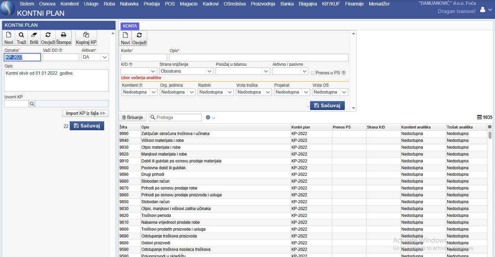

Kontni plan
Sinergis omogućava jednostavno upravljanje sa kontnim planom. Podešavanje i izmjene kontnog plana možete da uraditi putem menija Finansije i linka Kontni plan.
Prvo što ćete uraditi kada otvorite stranicu kontni plan je da pronađete kontni okvir koji koristite. Pronaći ćete ga klikom na dugme Traži i izborom kontnog okvira koji ćete koristiti (najšešće ćete već dobiti ispravan kontni plan).

Na desnoj strani postoji forma za unos i izmjenu kontnog plana. Ovdje možete da dodate konto ili da postojećem kontu promjeniti opis.
Konto možete da definišete prema karakteristikama i poziciji u kontnom okviru gdje ga unosite pa tako možete da ga vežete za kupca ili dobavljača, da mu odredite stranu knjiženja,da li je sastavni dio bilansa (ili vanbilansni konto), da li je u pitanju aktivan ili pasivan konto, te da li se stanje na tom kontu na kraju godine prenosi u početno stanje.
Pored ovog, možete da precizno odredite karakteristike konta, tj. da odredite da li je konto vezan za komintenta, da li pripada nekoj organizacionoj jedinici, da li je povezan sa radnikom, da li zahtjeva vrstu troška, da li je sastavni dio nekog projekta ili je vezan za neku vrstu osnovnog sredstva.
Konta koja su korištena prilikom knjiženja, tj. ona konta koja su imala određene transakcije nije moguće brisati (bez obzira što im je vrijednost
0ali im je moguće promjeniti i opis i šifru.